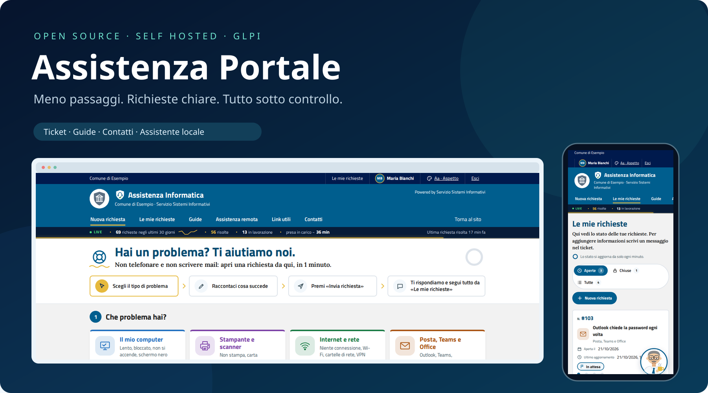
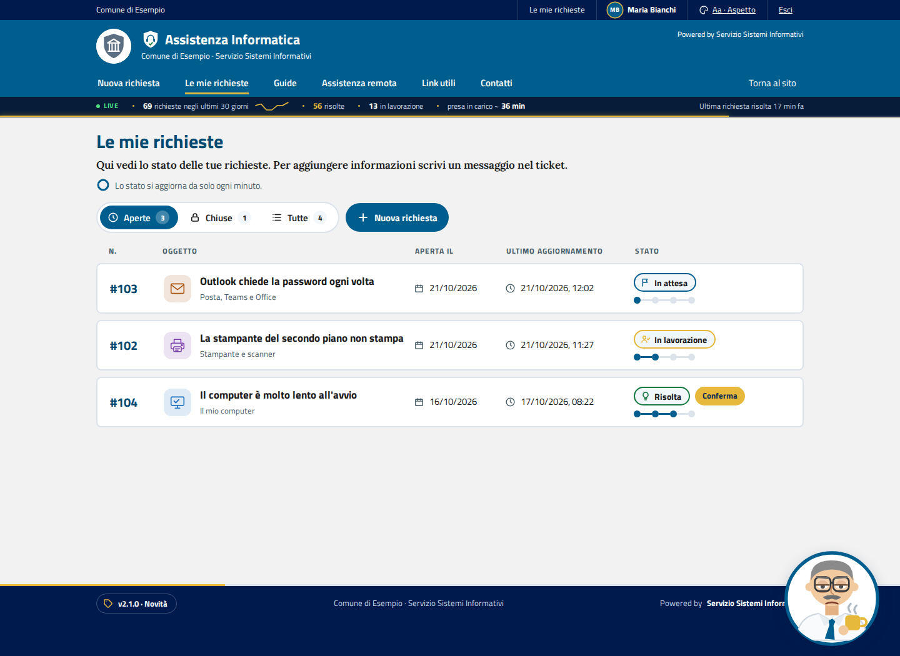
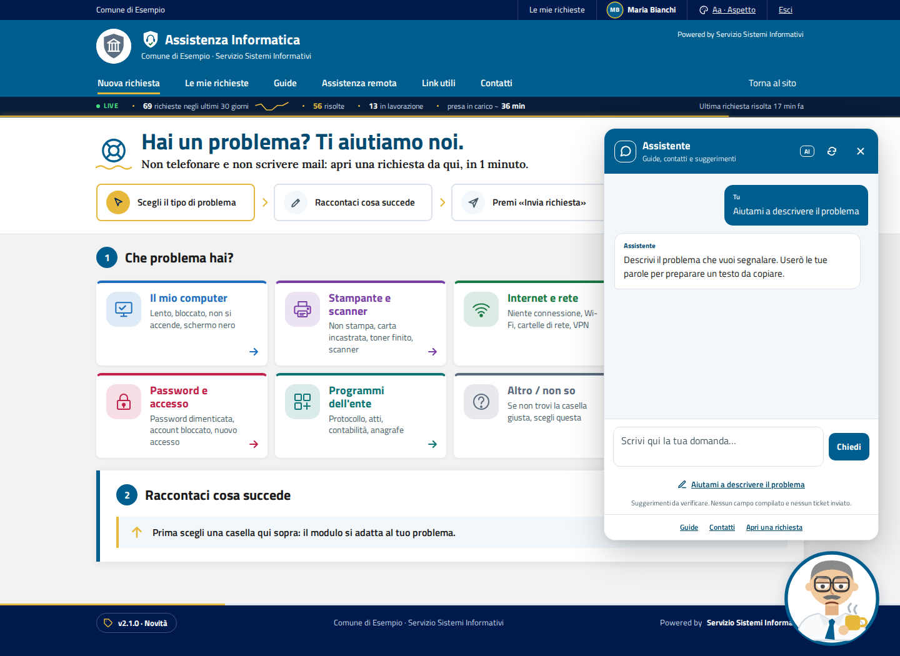
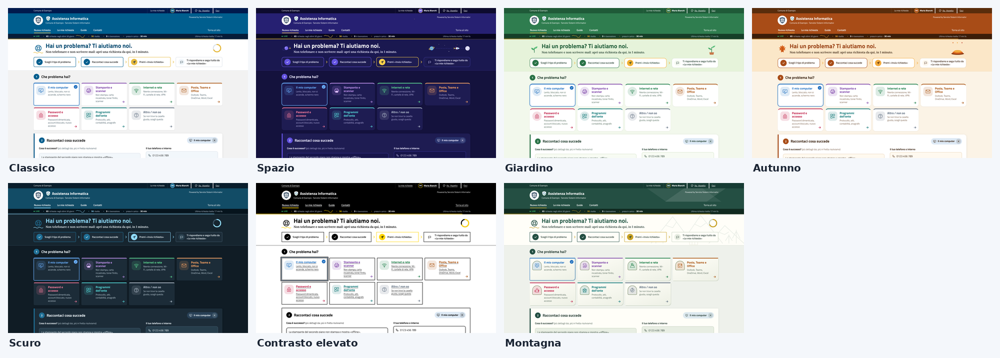
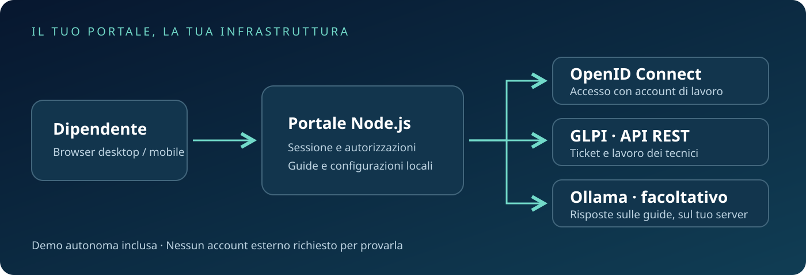

Il portale di assistenza open source per GLPI.
Un ingresso semplice per l'assistenza. Chi chiede aiuto usa un'interfaccia guidata. I tecnici continuano a lavorare in GLPI, attraverso le sue API, senza modificarne il codice.
In breve: Assistenza Portale è un portale utenti open source (licenza EUPL-1.2) e self-hosted per GLPI 11. Offre richieste guidate, conversazioni, guide, rubrica dei contatti e un assistente AI locale basato su Ollama. Funziona con Node.js 20.19 o superiore e si prova in due minuti con una demo a dati inventati.

Richieste guidate: scegli, descrivi, invia, segui
Numero della richiesta, stato e conversazione restano nello stesso posto. Pensato per enti pubblici e organizzazioni: nome, logo, categorie e contatti si adattano alla propria installazione.

- Richieste guidate: categorie, suggerimenti, allegati e screenshot incollati con Ctrl+V.
- Conversazioni: risposte pubbliche, soluzione, conferma e riapertura. Le note private restano in GLPI.
- Guide e contatti: FAQ ricercabili e rubrica locale.
- Link utili e istruzioni per l'assistenza remota.
- Profilo, PDF e statistiche aggregate.
- Accesso con OpenID Connect, guida per Microsoft Entra ID.



Un assistente che vive dentro il portale
Un personaggio animato apre una chat: trova i contatti, mostra le richieste dell'utente e aiuta a descrivere il problema.
- La bozza resta nella chat: decide l'utente cosa copiare nel modulo.
- Il modello non invia, non modifica e non chiude ticket.
- Contatti e richieste funzionano senza alcun modello.
- Risposte sulle guide con Ollama in locale: i dati restano sul tuo server.
- Ricerca sul web facoltativa e solo dopo conferma, con fonti e avviso «da verificare».
Modelli e pesi non sono inclusi: vanno scaricati separatamente e se ne verificano licenze e requisiti.
Sette temi, per leggere comodi
Classico, Spazio, Giardino, Autunno, Scuro, Contrasto elevato e Montagna. Dimensioni, spaziatura e movimento ridotto si regolano per ogni utente.

Un'architettura semplice da ospitare
Un backend Node.js gestisce sessione e permessi. Le credenziali GLPI e OIDC restano sul server; in produzione si usa HTTPS dietro reverse proxy e un utente API GLPI con privilegi minimi.

Provalo in due minuti
Serve Node.js 20.19 o superiore. Non servono GLPI, Microsoft 365 o Ollama: la demo usa dati inventati.
git clone https://github.com/realfulvio/assistenza-portale.git
cd assistenza-portale
npm ci
npm run demoApri http://127.0.0.1:3000/assistenza/ e scegli «Entra nella demo». Per l'installazione vera segui la guida all'installazione, la configurazione di GLPI e quella dell'assistente locale.
La demo consente un accesso simulato: usala solo per prove locali. Le immagini di questa pagina vengono dalla demo: organizzazione, persone e ticket sono inventati.
Domande frequenti
Che cos'è Assistenza Portale?
È un portale web open source per GLPI. Chi chiede aiuto usa un'interfaccia guidata per aprire e seguire le richieste, consultare le guide e trovare i contatti; i tecnici continuano a lavorare in GLPI attraverso le sue API, senza che il codice di GLPI venga modificato.
Con quali versioni di GLPI funziona?
È pensato per GLPI 11. Il portale usa le API di GLPI con un utente API a privilegi minimi, quindi non richiede modifiche al codice di GLPI.
Posso provarlo senza installare GLPI?
Sì. Con Node.js 20.19 o superiore bastano quattro comandi (git clone, cd, npm ci, npm run demo): la demo usa dati inventati e non richiede GLPI, Microsoft 365 o Ollama.
L'assistente AI invia i miei dati a servizi esterni?
No, per impostazione predefinita. Le risposte sulle guide usano Ollama in locale, quindi i dati restano sul proprio server. La ricerca sul web è facoltativa e parte solo dopo la conferma dell'utente, con fonti e avviso «da verificare».
Con quale licenza è distribuito?
Con licenza EUPL-1.2. I modelli di intelligenza artificiale non sono inclusi: vanno scaricati separatamente verificandone licenze e requisiti.
Come si accede al portale?
Con OpenID Connect; nella documentazione c'è una guida per Microsoft Entra ID. Le credenziali GLPI e OIDC restano sul server.